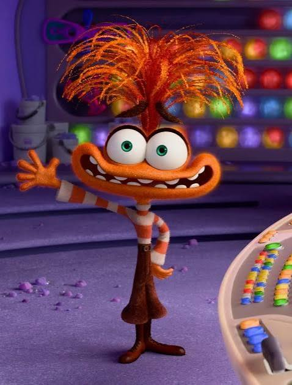

A equipe de emoções apareceu pela primeira vez em 2015, trazendo uma nova abordagem sobre as emoções humanas.
Antes da chegada das novas emoções, a mesa de controle tinha apenas quatro emoções principais.
Embora a Alegria seja muito associada a liderança na infância, diferentes emoções assumem o controle do painel de acordo com o momento da vida e os sentimentos da Riley.